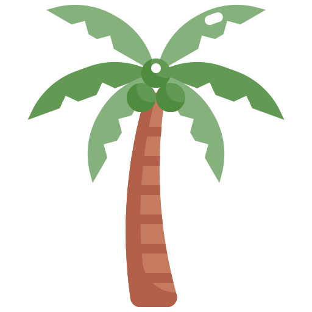
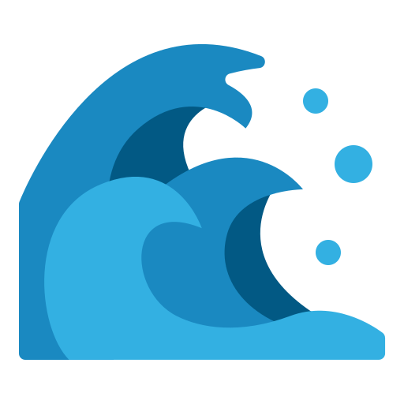

Axel's Weg von Deutschland nach Kenia – Aufbau von Geschäften, Freundschaften & neuen Chancen
Willkommen bei unserer Geschichte! 
In diesen Videos erzählen wir die Geschichte von Axel, der mit der Vision nach Kenia kam, mehr als nur Urlaub zu erleben. Seine Reise handelt davon, Kenia zu entdecken und wunderbare Menschen zu treffen. Vielleicht finden sich auf diesem Weg auch Freunde des Doppelkopf-Spiels.
Axel erkannte das Potenzial, das Kenia zu bieten hat – von der wunderschönen Küste und der herzlichen Gastfreundschaft bis hin zu den Menschen, der Kultur, dem Tourismus und den vielfältigen Geschäftsmöglichkeiten. Sein Ziel ist es, wertvolle Verbindungen zu schaffen und mehr Menschen aus Deutschland dazu zu ermutigen, Kenia selbst zu erleben.
Wir sind davon überzeugt, dass Kenia ein wunderbarer Ort ist, um ihn zu besuchen und zu erkunden, Freundschaften zu schließen und neue Möglichkeiten zu entdecken. Ob Sie für einen Urlaub kommen, eine ruhige Unterkunft suchen, Freunde treffen oder Geschäftsmöglichkeiten erkunden möchten – Kenia hat etwas Besonderes zu bieten.


Wenn Sie aus Deutschland oder einem anderen Teil der Welt kommen und darüber nachdenken, Kenia zu besuchen, sind Sie herzlich willkommen! 
Axel's Journey from Germany to Kenya – Building Businesses, Friendships & New Opportunities
Welcome to our story! 
In these videos, we share the story of Axel, who came to Kenya with a vision to experience more than just a typical vacation. His journey is about discovering Kenya and meeting wonderful people. Along the way, he might even find fellow fans of the card game Doppelkopf.
Axel recognized the potential Kenya has to offer—from its beautiful coast and warm hospitality to its people, culture, tourism, and growing business opportunities. His goal is to forge valuable connections and encourage more people from Germany to experience Kenya firsthand.
We are convinced that Kenya is a wonderful place to visit and explore, to make friends, and to discover new possibilities. Whether you are coming for a holiday, looking for a peaceful place to stay, wanting to meet friends, or exploring business opportunities—Kenya has something special to offer.
If you are from Germany or anywhere else in the world and are thinking about visiting Kenya, you are warmly welcome! 
Diani Beach
Diani Beach ist die Südküste von Mombasa in Kenia. Dieses Gebiet hat sich in den letzten zehn Jahren zu einem Touristenmagnet entwickelt. Aus meiner Sicht ist es der schönste Platz am Meer in ganz Afrika. Die Gründe dafür werde ich so nach und nach erzählen.
Diani Beach is on the south coast of Mombasa in Kenya. This area has become a major tourist destination over the last ten years. In my opinion, it's the most beautiful seaside spot in all of Africa. I'll explain why gradually.